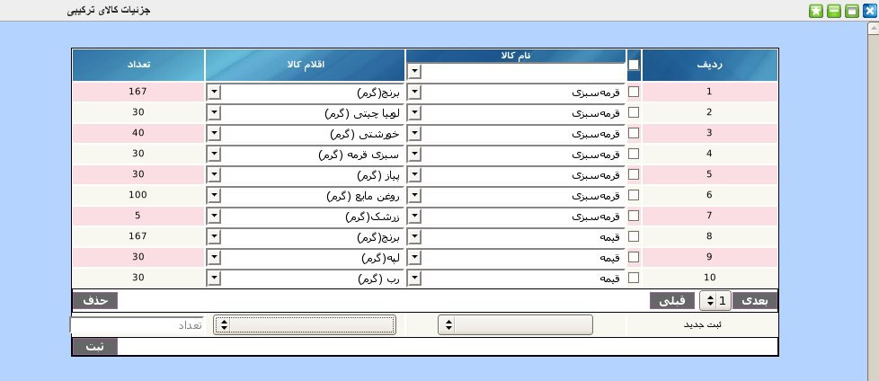

۱-جزئیات کالای ترکیبی
در این پنل کاربر باید مشخص کند هر کالای ترکیبی از چه کالاهایی تولید می گردد. در ستون اول پنل نام کالا وجود دارد و در ستون دوم کالاهای پایه تولید کننده وجود دارد. در ستون آخر میزان مصرف کالای جزء برای هر نفر مشاهده می شود.

برای ثبت جزئیات کالای جدید در پنل پایین جدول نام کالا سپس اقلام جزئی برای کالا را از لیست انتخاب نموده و در ستون آخر میزان مصرف کالا برای یک نفر انتخاب نمایید و بر روی دکمه ثبت کلیک نمایید.
برای جستجوی یک کالای خاص از لیست کشویی موجود در عنوان ستون نام کالا, نام کالا مورد نظر را انتخاب کنید.
جهت ویرایش نام کالا و اقلام کالا بر روی آن کلیک نمایید و از لیست باز شده آیتم مورد نظر را انتخاب نمایید و برای ویرایش میزان مصرف کالا بر روی هر آیتم کلیک کرده و پس از تصحیح کلید Enter را بزنید.
جهت حذف تکی هر آیتم, موس خود را بر روی شماره ردیف آیتم برده و بر روی لینک حذف کلیک نمایید.
جهت حذف گروهی آیتم ها, آیتم های مورد نظر را انتخاب و بر روی دکمه حذف کلیک نمایید.